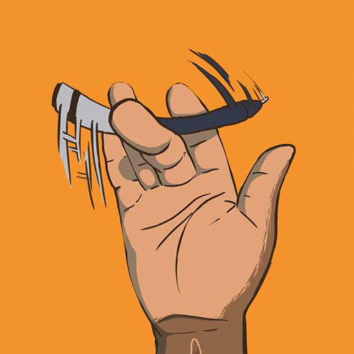
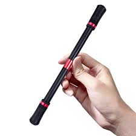

Fazer manobras com a balisong se tornou além de um hobby um esporte
e é um esporte muito conhecido em paises de fora do Brasil


A butterfly balisong, Uma faca de manobras feita de diversos materiais
Um deles é o metal

Tambem a impressão 3D


Assim como a balisong a trick pen pode ser feita de diversos materiais e tem diferentes manobras